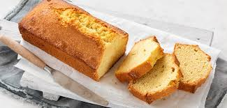

Basisrecept vanillecake

Ingredienten
- 200g ongezouten roomboter
- 200g fijne kristalsuiker
- 8g vanillesuiker
- 4 eieren
- 200g zelfrijzend bakmeel
- snuf zout
Bereiding
-
Meng in een kom de boter, suiker en vanillesuiker. Mix dit tot een romig
mengsel. Voeg de eieren één voor één toe en mix tot een glad mengsel.
-
Voeg het zelfrijzend bakmeel en zout beetje bij beetje toe aan het
beslag. Blijf mixen tot je een glad beslag hebt.
- Stort het beslag in een ingevette en bebloemde bakvorm.
- Bak de cake in 60 minuten gaar op 175 °C (boven- en onderwarmte).
-
Controleer vlak voor het einde van de baktijd of de cake gaar is met een
houten satéprikker of caketester. Als de prikker schoon uit de cake komt
dan is de cake gaar.
-
Na het bakken laat je de cake enkele minuten in de vorm afkoelen. Hierna
stort je de cake op een rooster en laat je hem volledig afkoelen.